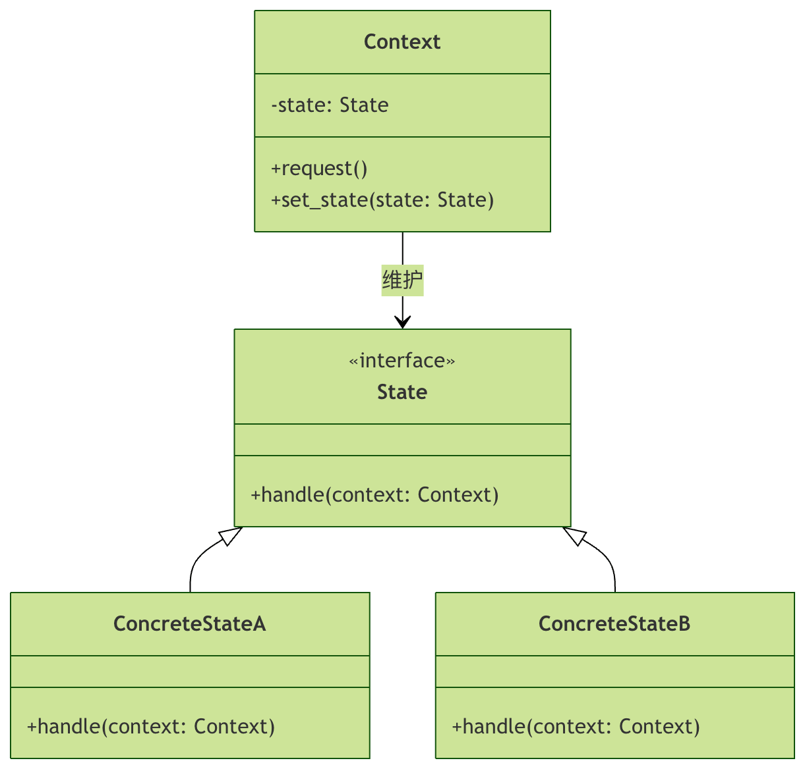

Python 状態パターン
状態パターンの核となる考え方は、オブジェクトの状態を独立したクラスにカプセル化し、オブジェクトの振る舞いを現在の状態オブジェクトに委譲することです。オブジェクトの状態が変化すると、別の状態オブジェクトに切り替わり、それによって振る舞いが変わります。
なぜ状態パターンが必要なのか？
状態パターンを使用しない場合、通常は1つのクラス内で大量のif-else 或 switch-case文を使用して異なる状態での振る舞いを処理します。この方法にはいくつかの問題があります。
- コードの肥大化：状態の数が増えるにつれて、条件分岐文がますます複雑になる
- 保守が困難：ある状態の振る舞いを変更すると、他の状態に影響を与える可能性がある
- 開放閉鎖原則に違反する：新しい状態を追加するには既存のコードを変更する必要がある
状態パターンは、各状態を独立したクラスにカプセル化することで、これらの問題を解決します。
状態パターンの構造
主要な役割
状態パターンには3つの中核的な役割があります。
- Context（コンテキスト）：現在の状態を定義する具体的な状態オブジェクトのインスタンスを保持する
- State（状態インターフェース）：Contextの特定の状態に関連する振る舞いをカプセル化するためのインターフェースを定義する
- ConcreteState（具体的な状態）：Stateインターフェースを実装する。各具体的な状態クラスは、Contextの状態に関連する振る舞いを実装する。
UML クラス図

状態パターンの実装
基本的な実装手順
簡単な例を通して状態パターンの実装を理解しましょう。エレベーターシステムがあり、エレベーターには「開く」、「閉じる」、「移動」、「停止」といった異なる状態があるとします。
ステップ 1：状態インターフェースを定義する
サンプル
class ElevatorState(ABC):
"""エレベーター状態インターフェース"""
@abstractmethod
def open_doors(self):
"""開く操作"""
pass
@abstractmethod
def close_doors(self):
"""閉じる操作"""
pass
@abstractmethod
def move(self):
"""移動操作"""
pass
@abstractmethod
def stop(self):
"""停止操作"""
pass
ステップ 2：具体的な状態クラスを実装する
サンプル
"""開状態"""
def open_doors(self):
print("ドアはすでに開いています")
return self
def close_doors(self):
print("ドアを閉じています...")
return DoorClosedState()
def move(self):
print("エラー：ドアが開いているので移動できません")
return self
def stop(self):
print("エレベーターは停止しています")
return self
class DoorClosedState(ElevatorState):
"""閉状態"""
def open_doors(self):
print("ドアを開いています...")
return DoorOpenState()
def close_doors(self):
print("ドアはすでに閉じています")
return self
def move(self):
print("エレベーターが動き始めました...")
return MovingState()
def stop(self):
print("エレベーターは停止しています")
return self
class MovingState(ElevatorState):
"""移動状態"""
def open_doors(self):
print("エラー：エレベーターが移動中なのでドアを開けられません")
return self
def close_doors(self):
print("ドアはすでに閉じています")
return self
def move(self):
print("エレベーターは移動中です")
return self
def stop(self):
print("エレベーターが停止しています...")
return DoorClosedState()
ステップ 3：コンテキストクラスを作成する
サンプル
"""エレベーターコンテキストクラス"""
def __init__(self):
# 初期状態はドアが閉じた状態
self._state = DoorClosedState()
@property
def state(self):
"""現在の状態を取得"""
return self._state
def set_state(self, state):
"""新しい状態を設定"""
self._state = state
print(f"状態が切り替わりました: {state.__class__.__name__}")
def open_doors(self):
"""開く操作"""
print("開く操作を実行中...")
self.set_state(self._state.open_doors())
def close_doors(self):
"""閉じる操作"""
print("閉じる操作を実行中...")
self.set_state(self._state.close_doors())
def move(self):
"""移動操作"""
print("移動操作を実行中...")
self.set_state(self._state.move())
def stop(self):
"""停止操作"""
print("停止操作を実行中...")
self.set_state(self._state.stop())
ステップ 4：状態パターンを使用する
サンプル
elevator = Elevator()
# 状態遷移をテスト
print("=== エレベーター状態遷移テスト ===")
elevator.open_doors() # 閉状態から開状態に切り替え
elevator.close_doors() # 開状態から閉状態に切り替え
elevator.move() # 閉状態から移動状態に切り替え
elevator.stop() # 移動状態から閉状態に切り替え
print("\n=== 不正な操作のテスト ===)
elevator.open_doors() # 正常にドアを開ける
elevator.move() # 開状態で移動を試みる（エラーになるはず）
実行結果
=== 电梯状态转换测试 === 执行开门操作... 正在开门... 状态已切换为: DoorOpenState 执行关门操作... 正在关门... 状态已切换为: DoorClosedState 执行移动操作... 电梯开始移动... 状态已切换为: MovingState 执行停止操作... 电梯停止中... 状态已切换为: DoorClosedState === 测试非法操作 === 执行开门操作... 正在开门... 状态已切换为: DoorOpenState 执行移动操作... 错误：门还开着，不能移动 状态已切换为: DoorOpenState
状態パターンの高度な応用
共有状態を持つ状態パターン
状況によっては、複数のコンテキストが同じ状態オブジェクトを共有する必要がある場合があります。シングルトンパターンを使用して状態の共有を実現できます。
サンプル
"""シングルトンメタクラス"""
_instances = {}
def __call__(cls, *args, **kwargs):
if cls not in cls._instances:
cls._instances[cls] = super().__call__(*args, **kwargs)
return cls._instances[cls]
class SharedDoorOpenState(ElevatorState, metaclass=Singleton):
"""共有された開状態（シングルトン）"""
def open_doors(self):
print("ドアはすでに開いています")
return self
def close_doors(self):
print("ドアを閉じています...")
return SharedDoorClosedState()
def move(self):
print("エラー：ドアが開いているので移動できません")
return self
def stop(self):
print("エレベーターは停止しています")
return self
class SharedDoorClosedState(ElevatorState, metaclass=Singleton):
"""共有された閉状態（シングルトン）"""
def open_doors(self):
print("ドアを開いています...")
return SharedDoorOpenState()
def close_doors(self):
print("ドアはすでに閉じています")
return self
def move(self):
print("エレベーターが動き始めました...")
return SharedMovingState()
def stop(self):
print("エレベーターは停止しています")
return self
class SharedMovingState(ElevatorState, metaclass=Singleton):
"""共有された移動状態（シングルトン）"""
def open_doors(self):
print("エラー：エレベーターが移動中なのでドアを開けられません")
return self
def close_doors(self):
print("ドアはすでに閉じています")
return self
def move(self):
print("エレベーターは移動中です")
return self
def stop(self):
print("エレベーターが停止しています...")
return SharedDoorClosedState()
状態パターンとステートマシン
状態パターンはしばしばステートマシンと組み合わせて使用されます。次はより複雑なステートマシンの例です。
サンプル
"""自動販売機状態インターフェース"""
@abstractmethod
def insert_coin(self, machine, amount):
"""硬貨を投入"""
pass
@abstractmethod
def select_product(self, machine, product):
"""商品を選択"""
pass
@abstractmethod
def dispense(self, machine):
"""商品を出す"""
pass
@abstractmethod
def refund(self, machine):
"""返金"""
pass
class WaitingState(VendingMachineState):
"""硬貨投入待ち状態"""
def insert_coin(self, machine, amount):
print(f"{amount} 元を投入しました")
machine.balance += amount
return HasMoneyState()
def select_product(self, machine, product):
print("先に硬貨を投入してください")
return self
def dispense(self, machine):
print("先に硬貨を投入して商品を選択してください")
return self
def refund(self, machine):
print("返金できる金額がありません")
return self
class HasMoneyState(VendingMachineState):
"""硬貨投入済み状態"""
def insert_coin(self, machine, amount):
print(f"さらに {amount} 元を投入")
machine.balance += amount
return self
def select_product(self, machine, product):
if product.price <= machine.balance:
print(f"商品を選択しました: {product.name}")
machine.selected_product = product
return ProductSelectedState()
else:
print("残高が不足しています。硬貨を追加するか、より安い商品を選択してください")
return self
def dispense(self, machine):
print("先に商品を選択してください")
return self
def refund(self, machine):
print(f"{machine.balance} 元を返金します")
machine.balance = 0
return WaitingState()
class ProductSelectedState(VendingMachineState):
"""商品選択済み状態"""
def insert_coin(self, machine, amount):
print("商品が選択されているため、硬貨を投入できません")
return self
def select_product(self, machine, product):
print("商品が選択されています。先に現在の取引を完了してください")
return self
def dispense(self, machine):
product = machine.selected_product
change = machine.balance - product.price
print(f"商品を出します: {product.name}")
if change > 0:
print(f"お釣り: {change} 元")
machine.balance = 0
machine.selected_product = None
return WaitingState()
def refund(self, machine):
print(f"{machine.balance} 元を返金します")
machine.balance = 0
machine.selected_product = None
return WaitingState()
class Product:
"""商品クラス"""
def __init__(self, name, price):
self.name = name
self.price = price
class VendingMachine:
"""自動販売機"""
def __init__(self):
self._state = WaitingState()
self.balance = 0
self.selected_product = None
def set_state(self, state):
self._state = state
def insert_coin(self, amount):
print(f"操作: {amount} 元を投入")
self.set_state(self._state.insert_coin(self, amount))
def select_product(self, product):
print(f"操作: 商品 {product.name} を選択")
self.set_state(self._state.select_product(self, product))
def dispense(self):
print("操作: 商品の取り出しを要求")
self.set_state(self._state.dispense(self))
def refund(self):
print("操作: 返金を要求")
self.set_state(self._state.refund(self))
状態パターンの長所と短所
長所
- 単一責任の原則：特定の状態に関連するコードを独立したクラスに置く
- 開放閉鎖の原則：既存の状態クラスやコンテキストを変更せずに新しい状態を導入できる
- 条件文の排除：ポリモーフィズムの呼び出しによって巨大な条件分岐文を排除する
- 状態遷移が明確：状態遷移をより明確にし、状態遷移によるエラーを減らす
短所
- 過度な設計になる可能性がある：状態の数が非常に少ないか、めったに変わらない場合、状態パターンの使用は過度に複雑になる可能性がある
- 状態クラスの数が増える：各状態に対応するクラスが必要なため、クラスの数が増える可能性がある
- コンテキストと状態の結合：コンテキストは状態遷移のためにすべての具体的な状態クラスを把握する必要がある
実践演習
演習 1：エレベーターシステムの改善
エレベーターシステムに以下の機能を追加してみましょう：
- 「修理中」状態を追加し、この状態ではすべての操作を禁止する
- 階層選択機能を追加し、停止状態でのみ階層を選択できるようにする
- 階層到着時の自動状態遷移を実装する
演習 2：交通信号システムの実装
状態パターンを使用して信号機システムを実装します。赤信号、青信号、黄信号の3つの状態を含み、状態遷移規則は次のとおりです：
- 赤信号 → 青信号（30秒後）
- 青信号 → 黄信号（25秒後）
- 黄信号 → 赤信号（5秒後）
演習 3：ゲームキャラクターの状態
ゲームキャラクターの状態システムを設計し、以下の状態を含めます：
- 正常状態：移動、攻撃が可能
- 毒状態：継続的にHPが減少し、移動速度が半分になる
- スタン状態：移動と攻撃が不可能
- 無敵状態：ダメージを受けない
まとめ
状態パターンは強力なデザインパターンであり、オブジェクトの動作がその状態に依存し、状態の数が多く、状態遷移が複雑なシナリオに特に適しています。各状態を独立したクラスにカプセル化することで、状態パターンはコードをより明確にし、保守と拡張を容易にします。
重要なポイント：
- 状態パターンは状態をオブジェクトとしてカプセル化することで条件分岐を排除する
- コンテキストは状態に関連する動作を現在の状態オブジェクトに委譲する
- 状態遷移はコンテキストまたは状態オブジェクト自身によってトリガーできる
- 状態パターンを適切に使用することで、コードの保守性を大幅に向上できる
クリックしてノートを共有
<p style="font-size:14px;">ノートは本記事の内容拡張である必要があります！</p><br> <p style="font-size:12px;"><a href="../tougao.html" target="_blank">記事投稿はこちらをクリック</a></p> <p style="font-size:14px;"><a href="../w3cnote/runoob-user-test-intro.html" target="_blank">登録招待コードの取得方法</a></p> <h3 class="text-muted"><i class="fa fa-info-circle" aria-hidden="true"></i> ノートを共有する前に<a href=";.html" class="runoob-pop">ログイン</a>が必要です！</h3> <p><a href="../w3cnote/runoob-user-test-intro.html" target="_blank">登録招待コードの取得方法</a></p>